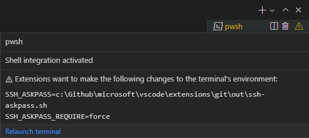

终端高级功能
Visual Studio Code 的集成终端具有许多高级功能和设置，例如 Unicode 和表情符号支持、自定义键盘快捷方式以及自动回复。本文详细介绍了这些高级功能。如果你是 VS Code 或集成终端的新手，建议先阅读终端基础文章。
持久会话
终端支持两种不同类型的持久会话：
- 进程重连：重新加载窗口时（例如，在安装扩展后），重新连接到之前的进程并恢复其内容。
- 进程恢复：重新启动 VS Code 时，终端的内容将恢复，并且进程将使用其原始环境重新启动。
这两种持久会话都可以通过将 setting(terminal.integrated.enablePersistentSessions) 设置为 false 来禁用，恢复的滚动量由 setting(terminal.integrated.persistentSessionScrollback) 设置控制。进程恢复可以通过 setting(terminal.integrated.persistentSessionReviveProcess) 独立配置。
在窗口之间移动终端
终端选项卡可以在 VS Code 窗口之间拖放。也可以通过命令面板和终端: 分离会话以及终端: 附加到会话命令手动完成此操作。
配置终端可见性
当打开窗口时，如果终端视图可见，它将使用持久会话重新连接到终端，或者创建一个新的 shell。此行为可以通过 setting(terminal.integrated.hideOnStartup) 设置进行微调。
never（默认）：启动时从不隐藏终端视图。whenEmpty：仅在没有恢复持久会话时隐藏终端。always：始终隐藏终端，即使有持久会话被恢复。
setting(terminal.integrated.hideOnLastClosed) 设置也可用于覆盖关闭最后一个终端时关闭终端视图的默认行为。
键盘快捷方式与 shell
作为嵌入式应用程序，集成终端应拦截 VS Code 内分发的部分（但不是全部）键盘快捷方式。
可配置的 setting(terminal.integrated.commandsToSkipShell) 设置确定哪些命令的键盘快捷方式应始终"跳过 shell"，而由 VS Code 的键盘快捷方式系统处理。默认情况下，它包含一个硬编码的命令列表，这些命令是 VS Code 体验中不可或缺的，但你可以添加或删除特定命令：
{
"terminal.integrated.commandsToSkipShell": [
// 确保切换侧边栏可见性的键盘快捷方式跳过 shell
"workbench.action.toggleSidebarVisibility",
// 将快速打开的键盘快捷方式发送到 shell
"-workbench.action.quickOpen",
]
}查看 setting(terminal.integrated.commandsToSkipShell) 设置详情以了解默认命令的完整列表。
>提示： setting(terminal.integrated.sendKeybindingsToShell) 可以配置为覆盖 setting(terminal.integrated.commandsToSkipShell)，并将大多数键盘快捷方式分发到 shell。但请注意，这将禁用诸如 kbstyle(Ctrl+F) 之类的键盘快捷方式来打开查找。
和弦键绑定
和弦键盘快捷方式由两个键盘快捷方式组成，例如 kbstyle(Ctrl+K) 后跟 kbstyle(Ctrl+C) 将行更改为注释。和弦键绑定默认始终跳过 shell，但可以通过 setting(terminal.integrated.allowChords) 禁用。
macOS 清除屏幕
在 macOS 上，kbstyle(Cmd+K) 是终端中清除屏幕的常用键盘快捷方式，因此 VS Code 也遵循这一点，这意味着 kbstyle(Cmd+K) 和弦键绑定将不起作用。可以通过删除清除键盘快捷方式来启用 kbstyle(Cmd+K) 和弦键绑定：
{
"key": "cmd+k",
"command": "-workbench.action.terminal.clear"
}此外，如果有任何扩展贡献了 kbstyle(Cmd+K) 键盘快捷方式，由于键盘快捷方式优先级的工作方式，此键盘快捷方式将被自动覆盖。要在此情况下重新启用 kbstyle(Cmd+K) 清除键盘快捷方式，你可以在用户键盘快捷方式中重新定义它，用户键盘快捷方式的优先级高于扩展键盘快捷方式：
{
"key": "cmd+k",
"command": "workbench.action.terminal.clear",
"when": "terminalFocus && terminalHasBeenCreated || terminalFocus && terminalProcessSupported"
}助记符
使用助记符访问 VS Code 的菜单（例如，kbstyle(Alt+F) 用于文件菜单）在终端中默认禁用，因为这些按键事件通常是 shell 中的重要热键。设置 setting(terminal.integrated.allowMnemonics) 来启用助记符，但请注意这将不允许任何 kbstyle(Alt) 按键事件传递到 shell。此设置在 macOS 上无效。
自定义序列键盘快捷方式
workbench.action.terminal.sendSequence 命令可用于向终端发送特定的文本序列，包括 shell 特殊解释的转义序列。该命令使你能够发送箭头键、kbstyle(Enter)、光标移动等。通过命令面板运行此命令可进行手动输入，但在你分配带有参数的自定义键盘快捷方式时最为有用。
例如，下面的序列跳转到光标左侧的单词（kbstyle(Ctrl+Left)），然后按下 kbstyle(Backspace)：
{
"key": "ctrl+u",
"command": "workbench.action.terminal.sendSequence",
"args": {
"text": "[1;5D"
}
}此功能支持变量替换。
sendSequence 命令仅支持通过字符代码使用 � 格式来使用字符（不支持 \x00）。请参阅以下资源了解有关这些十六进制代码和终端序列的更多信息：
- XTerm 控制序列
- C0 和 C1 控制代码列表
发送自定义信号
workbench.action.terminal.sendSignal 命令可用于向活动终端中的前台进程发送任意信号。
例如，下面的按键绑定将发送 SIGTERM，使其优雅地终止。
{
"key": "ctrl+shift+/",
"command": "workbench.action.terminal.sendSignal",
"args": {
"signal": "SIGTERM"
}
}确认对话框
为了避免不必要的输出和用户提示，终端在进程退出时不显示警告对话框。如果需要警告，可以通过以下设置进行配置：
setting(terminal.integrated.confirmOnExit)- 控制窗口关闭时，如果存在活动的调试会话，是否进行确认。setting(terminal.integrated.confirmOnKill)- 控制终止具有子进程的终端时是否进行确认。setting(terminal.integrated.showExitAlert)- 控制当退出代码非零时是否显示"终端进程已终止，退出代码为"的警报。自动回复
如果接收到确切的输出序列，终端可以自动为 shell 提供可配置的输入响应。最常见的用例是在批处理脚本中按下 kbstyle(Ctrl+C) 时自动回复，询问用户是否要终止批处理作业。要自动关闭此消息，请添加此设置：
{
"terminal.integrated.autoReplies": {
"Terminate batch job (Y/N)": "Y\r"
}
}请注意，此处使用的 \r 字符表示 kbstyle(Enter)，与自定义序列键盘快捷方式类似，此功能支持向 shell 发送转义序列。
默认情况下不配置自动回复，因为提供 shell 输入应是用户的显式操作或配置。
更改制表符宽度
setting(terminal.integrated.tabStopWidth) 设置允许配置当终端中运行的程序输出 \t 时的制表符宽度。通常不需要这样做，因为程序通常会移动光标而不是使用 kbstyle(Tab) 字符，但在某些情况下可能会有用。
Unicode 和表情符号支持
终端同时支持 Unicode 和表情符号。在终端中使用这些字符时，需要注意以下事项：
- 某些 Unicode 符号具有模糊宽度，可能会在不同的 Unicode 版本之间变化。目前我们支持 Unicode 版本 6 和 11 的宽度，可以通过
setting(terminal.integrated.unicodeVersion)设置进行配置。指定的版本应与 shell/操作系统使用的 Unicode 版本匹配，否则可能会出现渲染问题。请注意，shell/操作系统的 Unicode 版本可能与字体的实际宽度不匹配。 - 某些由多个字符组成的表情符号可能无法正确渲染，例如肤色修饰符。
- Windows 上的表情符号支持有限。
图像支持
终端中的图像支持需要它们使用 Sixel 或 iTerm 内联图像协议。此功能默认禁用，可以通过 setting(terminal.integrated.enableImages) 设置启用。
当前限制：
- 序列化不起作用，因此重新加载终端不会保留任何图像（jerch/xterm-addon-image#47）。
- 以 HTML 格式复制选择内容不包含所选图像（jerch/xterm-addon-image#50）。
- 动画 gif 不起作用（jerch/xterm-addon-image#51）。
- 比单元格短的图像将无法正常使用，这是序列的设计缺陷，在 XTerm 中也会出现。
进程环境
在终端内运行的应用程序的进程环境受各种设置和扩展的影响，可能导致 VS Code 终端中的输出看起来与其他终端中不同。
环境继承
当 VS Code 打开时，它会启动一个登录 shell 环境以获取 shell 环境。这是因为开发工具通常通过 shell 启动脚本（如 ~/.bash_profile）添加到 $PATH 中。默认情况下，终端继承此环境，具体取决于你的配置文件 shell 参数，这意味着可能运行了多个配置文件脚本，这可能导致意外行为。
此环境继承可以通过 setting(terminal.integrated.inheritEnv) 设置在 macOS 和 Linux 上禁用。
VS Code 实例之间的环境变量
启动多个 VS Code 实例时，环境变量在它们之间共享：
- 第一个 VS Code 实例从父进程（例如，启动 VS Code 的 shell 或应用程序）继承环境变量。
- 后续的 VS Code 实例从第一个运行的 VS Code 实例继承环境变量，而不是从父进程。
要隔离 VS Code 实例之间的环境变量，请使用 --user-data-dir 命令行选项为每个实例使用单独的用户数据目录运行。这确保每个实例维护自己的环境、设置和扩展。
与 $LANG 的交互
$LANG 环境变量有一些特殊的交互，它决定了字符在终端中的显示方式。此功能通过 setting(terminal.integrated.detectLocale) 设置进行配置：
| 值 | 行为 | |
|---|---|---|
| ------------------ | --- | |
on | 始终将 $LANG 设置为最常用的所需值。所选值基于操作系统区域设置（回退到 en-US）并使用 UTF-8 编码。 | |
auto（默认） | 如果 $LANG 未正确配置（未设置为 UTF 或 EUC 编码），则类似于 on 行为设置 $LANG。 | |
off | 不修改 $LANG。 |
扩展环境贡献
扩展能够为终端环境做出贡献，使它们能够为终端提供一些集成。例如，内置的 Git 扩展注入 GIT_ASKPASS 环境变量，以允许 VS Code 处理对 Git 远程的身份验证。
如果扩展更改了终端环境，任何现有终端将在安全的情况下重新启动，否则终端状态中将显示警告。将鼠标悬停在其上可以查看有关更改的更多信息，其中还包括一个重新启动按钮。

Windows 与 ConPTY
VS Code 的终端基于 xterm.js 项目构建，实现了一个类 Unix 的终端，将所有数据序列化为字符串并通过"伪终端"管道传输。在历史上，这不是 Windows 上终端的工作方式，Windows 使用 控制台 API 来实现其名为 'conhost' 的控制台。
一个名为 winpty 的开源项目被创建出来试图解决这个问题，通过在类 Unix 终端和 Windows 控制台之间提供一个模拟/转换层。VS Code 的终端最初仅使用 winpty 实现。这在当时非常好，但在 2018 年，Windows 10 获得了 ConPTY API，它采纳了 winpty 开创的理念并将其内置到 Windows 中，提供了一个更可靠、更受支持的系统，用于在 Windows 上使用类 Unix 终端和应用程序。
VS Code 在 Windows 10+（从构建号 18309 开始）上默认使用 ConPTY，并回退到 winpty 作为旧版 Windows 的传统选项。ConPTY 可以通过 setting(terminal.integrated.windowsEnableConpty) 设置显式禁用，但通常应避免这样做。
由于 ConPTY 是一个模拟层，它确实带有一些特殊问题。最常见的是 ConPTY 认为自己是视口的所有者，因此有时会重新打印屏幕。这种重新打印可能导致意外行为，例如在运行终端: 清除命令后显示旧内容。
远程开发
本节概述了当 VS Code 使用 VS Code 远程开发扩展连接到远程计算机时的特定主题。
远程窗口中的本地终端
默认的本地终端配置文件可以通过命令面板中的终端: 创建新的集成终端（本地）命令在远程窗口中启动。目前，非默认配置文件无法从远程窗口启动。
减少远程输入延迟（预览）
本地回显是一项有助于减轻远程窗口输入延迟的功能。它在远程确认结果之前，以暗淡的颜色在终端中写入按键。默认情况下，当检测到延迟超过 30 毫秒时，该功能开始运行，时间可以通过 setting(terminal.integrated.localEchoLatencyThreshold) 配置。未确认字符的颜色由 setting(terminal.integrated.localEchoStyle) 定义。
本地回显会根据终端中的活动程序动态禁用自身。这由 setting(terminal.integrated.localEchoExcludePrograms) 控制，默认为 ['vim', 'vi', 'nano', 'tmux']。建议你为任何高度动态和/或在输入时大量重新打印屏幕的应用程序或 shell 禁用此功能。
要完全禁用该功能，请使用：
{
"terminal.integrated.localEchoEnabled": false
}